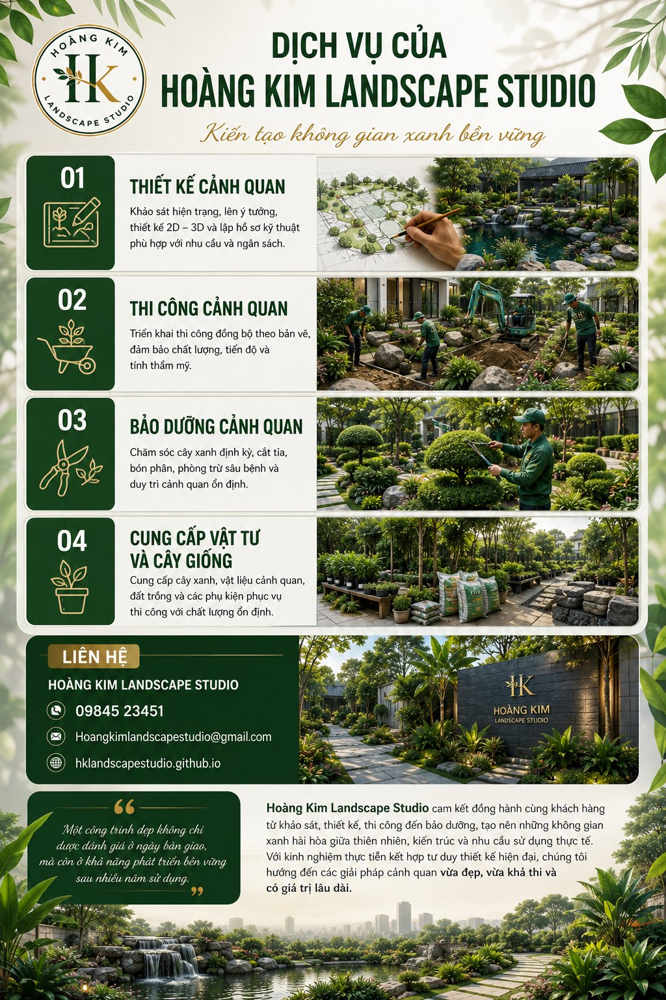

Giới thiệu
Một không gian xanh đẹp không chỉ tạo nên ấn tượng đầu tiên mà còn góp phần nâng cao chất lượng cuộc sống, cải thiện môi trường và gia tăng giá trị công trình. Tuy nhiên, vẻ đẹp của cảnh quan không đến từ việc trồng thật nhiều cây hay sử dụng các vật liệu đắt tiền, mà đến từ một phương án thiết kế khoa học, phù hợp với điều kiện thực tế và có khả năng phát triển bền vững theo thời gian.
Trong nhiều năm làm việc trong lĩnh vực thiết kế, thi công và quản lý cảnh quan, Hoàng Kim Landscape Studio nhận thấy rằng phần lớn những công trình xuống cấp nhanh đều bắt nguồn từ giai đoạn thiết kế chưa được đầu tư đúng mức. Cây xanh không phù hợp với khí hậu, hệ thống thoát nước thiếu tính toán, vật liệu không đồng bộ hoặc không có kế hoạch bảo dưỡng lâu dài là những nguyên nhân phổ biến khiến chi phí vận hành tăng cao và giá trị cảnh quan giảm sút.
Chính vì vậy, chúng tôi luôn theo đuổi triết lý:
Triết lý này không chỉ hướng đến tính thẩm mỹ mà còn đặt hiệu quả sử dụng, khả năng thi công và chi phí vận hành lâu dài lên hàng đầu.
Trong bài viết này, Hoàng Kim Landscape Studio chia sẻ những nguyên tắc quan trọng trong thiết kế cảnh quan mà chúng tôi áp dụng trong các dự án nhà ở, biệt thự, trường học, khu nghỉ dưỡng và không gian công cộng.
Thiết kế cảnh quan là gì?
Thiết kế cảnh quan là quá trình quy hoạch và tổ chức không gian ngoài trời nhằm tạo nên sự hài hòa giữa kiến trúc, thiên nhiên và nhu cầu sử dụng của con người.
Một bản thiết kế hoàn chỉnh không chỉ bao gồm việc bố trí cây xanh mà còn tích hợp nhiều yếu tố như địa hình, hệ thống giao thông nội bộ, mặt nước, vật liệu hoàn thiện, hệ thống chiếu sáng, hệ thống tưới và thoát nước.
Mục tiêu của thiết kế cảnh quan là xây dựng một không gian vừa có giá trị thẩm mỹ, vừa mang lại sự tiện nghi, dễ sử dụng và dễ bảo trì trong suốt vòng đời của công trình.
Ngày nay, thiết kế cảnh quan được ứng dụng rộng rãi trong:
- Nhà phố, biệt thự và khu đô thị.
- Trường học, bệnh viện và khu công nghiệp.
- Khách sạn, resort, công viên và quảng trường.
Dù quy mô lớn hay nhỏ, một phương án thiết kế hợp lý luôn giúp công trình đạt hiệu quả cao hơn cả về giá trị sử dụng lẫn chi phí đầu tư.
Vai trò của thiết kế cảnh quan
Tăng giá trị thẩm mỹ và giá trị bất động sản
Không gian xanh được đầu tư bài bản luôn tạo ấn tượng tích cực đối với người sử dụng và khách tham quan. Đối với các dự án thương mại hoặc bất động sản, cảnh quan đẹp còn góp phần nâng cao giá trị khai thác và khả năng cạnh tranh trên thị trường.
Cải thiện vi khí hậu
Cây xanh giúp giảm bức xạ nhiệt, tăng độ ẩm không khí, lọc bụi và giảm tiếng ồn. Một hệ thống cây xanh được bố trí hợp lý có thể cải thiện đáng kể điều kiện vi khí hậu, mang lại môi trường sống và làm việc dễ chịu hơn.
Tối ưu công năng sử dụng
Thiết kế cảnh quan không chỉ tạo ra vẻ đẹp mà còn giúp tổ chức không gian khoa học. Các khu vực nghỉ ngơi, đường dạo, sân chơi, bãi cỏ và khu vực sinh hoạt ngoài trời được kết nối hợp lý sẽ nâng cao trải nghiệm sử dụng cho mọi đối tượng.
Tiết kiệm chi phí vận hành
Một thiết kế tốt giúp lựa chọn đúng chủng loại cây, tối ưu hệ thống tưới và thoát nước, giảm thiểu chi phí bảo dưỡng trong nhiều năm sau khi công trình đi vào sử dụng.
Hướng đến phát triển bền vững
Xu hướng hiện đại ưu tiên sử dụng cây bản địa, vật liệu thân thiện với môi trường và các giải pháp tiết kiệm tài nguyên. Điều này không chỉ góp phần bảo vệ môi trường mà còn tạo nên những công trình có giá trị lâu dài.
Vì sao cần thiết kế trước khi thi công?
Trong thực tế, nhiều công trình lựa chọn thi công ngay mà chưa có phương án thiết kế rõ ràng. Điều này thường dẫn đến việc phải điều chỉnh liên tục trong quá trình triển khai, làm tăng chi phí, kéo dài tiến độ và ảnh hưởng đến chất lượng tổng thể.
Một bản thiết kế chuyên nghiệp mang lại nhiều lợi ích như:
- Xác định rõ định hướng thẩm mỹ ngay từ đầu.
- Dự toán khối lượng và ngân sách chính xác hơn.
- Hạn chế phát sinh trong quá trình thi công.
- Đồng bộ giữa cây xanh, vật liệu và hệ thống kỹ thuật.
- Dễ dàng kiểm soát chất lượng và tiến độ.
- Tạo cơ sở thuận lợi cho công tác bảo dưỡng về sau.
Tại Hoàng Kim Landscape Studio, mọi dự án đều bắt đầu bằng việc khảo sát hiện trạng, phân tích điều kiện tự nhiên và lắng nghe nhu cầu của khách hàng. Chúng tôi tin rằng một phương án thiết kế chỉ thực sự thành công khi có thể triển khai hiệu quả ngoài thực tế và duy trì vẻ đẹp của công trình trong nhiều năm.
1. Bắt đầu từ nhu cầu sử dụng
Không có một khu vườn nào phù hợp với tất cả mọi người.
Mỗi công trình đều có mục tiêu sử dụng khác nhau, vì vậy phương án thiết kế cũng cần được xây dựng dựa trên nhu cầu thực tế thay vì chỉ chạy theo xu hướng hoặc hình ảnh tham khảo trên Internet.
Nhà phố
Đối với nhà phố, diện tích thường không lớn nên ưu tiên là tạo cảm giác rộng rãi, thông thoáng và dễ chăm sóc. Cây xanh nên được bố trí để giảm bức xạ nhiệt, đồng thời tạo góc thư giãn cho các thành viên trong gia đình.
Biệt thự
Biệt thự thường có diện tích sân vườn lớn hơn nên ngoài yếu tố thẩm mỹ còn cần tạo điểm nhấn về không gian. Hồ nước, đường dạo, cây bóng mát và các khu vực nghỉ ngơi cần được bố trí hài hòa để tạo nên trải nghiệm sống chất lượng.
Quán cà phê
Không gian xanh đóng vai trò quan trọng trong việc tạo dấu ấn thương hiệu. Thiết kế cần hướng đến trải nghiệm của khách hàng, tạo nhiều góc nhìn đẹp, lối đi thuận tiện và các điểm nhấn phù hợp để tăng khả năng chia sẻ trên mạng xã hội.
Trường học
Đối với trường học, yếu tố an toàn và công năng được đặt lên hàng đầu. Cây bóng mát cần được lựa chọn kỹ lưỡng, tránh các loại cây có gai, quả độc hoặc bộ rễ phát triển mạnh gây ảnh hưởng đến công trình.
Kinh nghiệm thực tế
Trong quá trình quản lý cảnh quan tại Trường Đại học FPT AI Campus Quy Nhơn, chúng tôi nhận thấy rằng việc xác định đúng nhu cầu sử dụng ngay từ đầu giúp giảm đáng kể các thay đổi trong quá trình vận hành và bảo dưỡng.
Một phương án thiết kế tốt phải trả lời được các câu hỏi:
- Ai sẽ sử dụng không gian này?
- Họ sử dụng vào thời điểm nào?
- Mục đích chính là gì?
- Mức đầu tư mong muốn?
- Ai sẽ bảo dưỡng sau khi hoàn thành?
Khi những câu hỏi này được giải quyết rõ ràng, phương án thiết kế sẽ trở nên hiệu quả và có giá trị lâu dài hơn.
2. Lựa chọn cây phù hợp khí hậu
Cây xanh là yếu tố quan trọng nhất trong cảnh quan, nhưng cũng là yếu tố thay đổi nhiều nhất theo thời gian.
Một khu vườn đẹp trong ngày bàn giao chưa chắc vẫn giữ được vẻ đẹp sau ba hoặc năm năm nếu lựa chọn cây không phù hợp với điều kiện tự nhiên.
Tại Việt Nam, đặc biệt là khu vực miền Trung, cây xanh phải chịu ảnh hưởng của:
- Nắng nóng kéo dài.
- Gió mạnh.
- Mưa lớn theo mùa.
- Đất có độ mặn hoặc nghèo dinh dưỡng ở một số khu vực.
Do đó, khi thiết kế cần ưu tiên các loại cây có khả năng thích nghi tốt với điều kiện khí hậu địa phương.
Tiêu chí lựa chọn cây
- Phù hợp khí hậu địa phương.
- Ít sâu bệnh.
- Dễ tìm nguồn cung.
- Sinh trưởng ổn định.
- Chi phí chăm sóc hợp lý.
- Tuổi thọ cao.
- Bộ rễ không ảnh hưởng công trình.
- Tán cây phù hợp với không gian.
Một số nhóm cây thường sử dụng
Cây bóng mát
- Sao đen
- Giáng hương
- Bằng lăng
- Muồng hoàng yến
Cây bụi
- Chuỗi ngọc
- Trang Mỹ Hồng
- Nguyệt quế
- Kim đồng vàng
Cây nền
- Cỏ nhung Nhật
- Cỏ lá gừng
- Lẻ bạn
- Lan chi
Việc lựa chọn đúng cây ngay từ đầu sẽ giúp giảm đáng kể chi phí thay thế và bảo dưỡng trong nhiều năm sau.
3. Thiết kế phải thi công được
Đây là nguyên tắc quan trọng nhất trong triết lý làm nghề của Hoàng Kim Landscape Studio.
Rất nhiều bản thiết kế đẹp khi nhìn trên máy tính nhưng lại gặp khó khăn khi đưa vào thi công thực tế.
Nguyên nhân có thể đến từ:
- Vật liệu khó tìm.
- Chi tiết quá phức tạp.
- Không phù hợp hiện trạng.
- Vượt ngân sách.
- Khó bảo dưỡng.
Thiết kế cần gắn với thực tế
Một phương án thiết kế tốt phải được xây dựng dựa trên điều kiện thực tế của công trình. Chúng tôi luôn đánh giá:
- Khả năng thi công của từng hạng mục.
- Nguồn cung cây xanh và vật liệu.
- Điều kiện vận chuyển.
- Tiến độ thi công.
- Điều kiện thời tiết.
- Khả năng bảo dưỡng sau bàn giao.
Kinh nghiệm từ hiện trường
Với nhiều năm tham gia thi công và quản lý cảnh quan tại các dự án lớn, chúng tôi nhận thấy rằng những phương án càng đơn giản, rõ ràng và phù hợp thực tế thì càng mang lại hiệu quả lâu dài.
Một bản thiết kế tốt không phải là bản vẽ có nhiều chi tiết nhất, mà là bản vẽ có thể triển khai chính xác ngoài công trường, đúng ngân sách và đúng tiến độ.
4. Đảm bảo hệ thống thoát nước
Trong thiết kế cảnh quan, hệ thống thoát nước là một trong những hạng mục kỹ thuật quan trọng nhất nhưng cũng thường bị xem nhẹ.
Một khu vườn có thể rất đẹp trong những ngày đầu, nhưng nếu nước mưa không được xử lý hợp lý thì chỉ sau vài mùa mưa, cảnh quan sẽ xuống cấp nhanh chóng.
Nước đọng kéo dài không chỉ làm mất mỹ quan mà còn gây nhiều hệ lụy như:
- Thối rễ cây.
- Sụt lún nền sân.
- Bong tróc vật liệu lát.
- Xuất hiện rêu, nấm mốc.
- Tăng nguy cơ muỗi và côn trùng.
- Giảm tuổi thọ công trình.
Vì vậy, ngay từ giai đoạn thiết kế cần nghiên cứu kỹ hiện trạng địa hình để xây dựng giải pháp thoát nước phù hợp.
Những yếu tố cần tính toán
- Cao độ nền và độ dốc bề mặt.
- Hướng thoát nước tự nhiên.
- Hố ga và rãnh thu nước.
- Khả năng thoát nước khi mưa lớn.
- Vị trí các khu vực trũng.
Việc tính toán đúng ngay từ đầu sẽ giúp giảm đáng kể chi phí sửa chữa sau này.
Kinh nghiệm thực tế
Trong nhiều công trình cải tạo, nguyên nhân lớn nhất khiến sân vườn xuống cấp không phải do cây xanh mà là do hệ thống thoát nước không phù hợp.
Nhiều khu vực lát đá hoặc trồng cỏ không được xử lý cao độ chính xác khiến nước đọng sau mưa. Điều này dẫn đến hiện tượng rêu bám, hư hỏng vật liệu và ảnh hưởng đến bộ rễ cây.
- Thoát nước nhanh.
- Không gây xói mòn.
- Không ảnh hưởng kết cấu.
- Dễ bảo trì.
5. Kết hợp vật liệu hài hòa
Vật liệu đóng vai trò kết nối giữa kiến trúc và thiên nhiên.
Một khu vườn đẹp không nhất thiết phải sử dụng nhiều vật liệu đắt tiền mà cần lựa chọn đúng loại vật liệu, đúng vị trí và đúng tỷ lệ.
Những vật liệu thường được sử dụng gồm:
- Đá tự nhiên, đá rối và đá bước dạo.
- Gỗ ngoài trời và sỏi trang trí.
- Bê tông giả đá, gạch lát sân và thép sơn tĩnh điện.
Đồng nhất phong cách
Kiến trúc hiện đại nên sử dụng vật liệu có đường nét gọn gàng. Kiến trúc nhiệt đới ưu tiên đá tự nhiên, gỗ và cây xanh.
Tối ưu công năng
Không sử dụng vật liệu chỉ vì đẹp. Mỗi vật liệu đều phải đáp ứng độ bền, khả năng chống trơn trượt, dễ vệ sinh và dễ thay thế.
Hạn chế quá nhiều chủng loại
Việc sử dụng quá nhiều màu sắc và vật liệu khác nhau sẽ khiến tổng thể thiếu sự liên kết. Thông thường chỉ nên sử dụng 3–5 loại vật liệu chính để tạo sự hài hòa.
Gợi ý kết hợp
- Đá bước dạo + cỏ nhung Nhật.
- Gỗ ngoài trời + cây bóng mát.
- Sỏi trắng + cây bụi.
- Đá bazan + mặt nước.
- Bê tông rửa + cây bản địa.
Những giải pháp đơn giản thường mang lại hiệu quả lâu dài và dễ bảo dưỡng hơn.
Hoàng Kim Landscape Studio
Thiết kế · Thi công · Bảo dưỡng cảnh quan · Cung cấp vật tư và cây giống.
